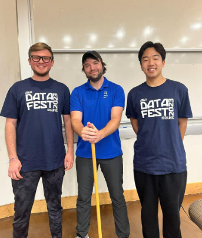

All courses and workshops I’ve been the lead instructor of and taught, with embedded links in the pictures to course websites or textbooks of the course. Teaching philosophy can be found below the list of courses.
Philosophy

Prior to my time at Duke, I’ve taught multiple sections of Introductory and Intermediate Statistics at Montana State, developed their Intermediate Statistics online course, and helped integrate R into the Introductory Statistics curricula. I prioritize community, communication, and respect in my classroom. I want to provide a space where we can freely talk about the material, embrace mistakes, and learn together throughout the semester.
Courses
Introductory to Data Science and Statistical Reasoning
Duke University
Fall 2022 | Spring 2023 | Summer 2023
Montana State Introductory Statistics with R
Montana State University
11 sections of in-person + online since Spring 2013 through Spring 2022
Intermediate Statistics with R
Montana State University
7 sections of in-person + online since Spring 2013 through Fall 2019
R-studio Data Science Workshops
Fall 2019 | Spring 2020
Class Links